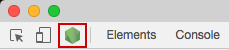
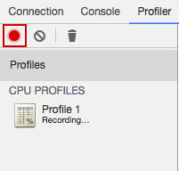

Profiling GlueStick renderer
Requirements: node 8.4.0+
In order to start profiling gluestick renderer (aka server), the first thing you need to do is to capture the profile information. Just follow these steps:
Run
gluestick start-clientcommand.Run
gluestick start-server -Dcommand in a separate terminal/tab.-Dflag is used to run the server in debug mode.Open Chrome Dev Tools (
cmd + alt + ion MacOS)Click Node.js logo in top-left corner

Navigate to Profiler tab and click record button

Open the desired page served by GlueStick in a browser, for instance
http://localhost:8880.Stop recording after the page is loaded.

You should see the profile chart now.

Now you can see the trace and the time spent on each function call, so you can analyse, pinpoint the expensive functions and optimise them.
Tip: By clicking on the function call in the chart, you will be redirected to its source.